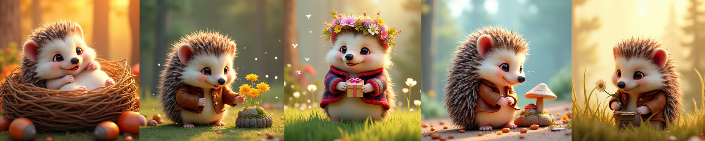
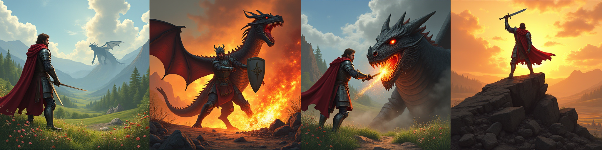
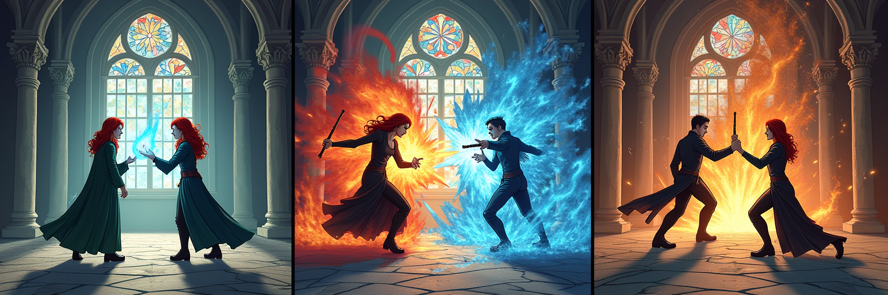

图片描述
将鼠标悬停在图片上查看详细描述
Despite remarkable progress in Text-to-Image models, many real-world applications require generating coherent image sets with diverse consistency requirements. Existing consistent methods often focus on a specific domain with specific aspects of consistency, which significantly constrains their generalizability to broader applications. In this paper, we propose a more challenging problem, Text-to-ImageSet (T2IS) generation, which aims to generate sets of images that meet various consistency requirements based on user instructions. To systematically study this problem, we first introduce T2IS-Bench with 596 diverse instructions across 26 subcategories, providing comprehensive coverage for T2IS generation. Building on this, we propose T2IS-Eval, an evaluation framework that transforms user instructions into multifaceted assessment criteria and employs effective evaluators to adaptively assess consistency fulfillment between criteria and generated sets. Subsequently, we propose AutoT2IS, a training-free framework that maximally leverages pretrained Diffusion Transformers' in-context capabilities to harmonize visual elements to satisfy both image-level prompt alignment and set-level visual consistency. Extensive experiments on T2IS-Bench reveal that diverse consistency challenges all existing methods, while our AutoT2IS significantly outperforms current generalized and even specialized approaches. Our method also demonstrates the ability to enable numerous underexplored real-world applications, confirming its substantial practical value. All our data and code will be publicly available.
将鼠标悬停在图片上查看详细描述
BibTex Code Here